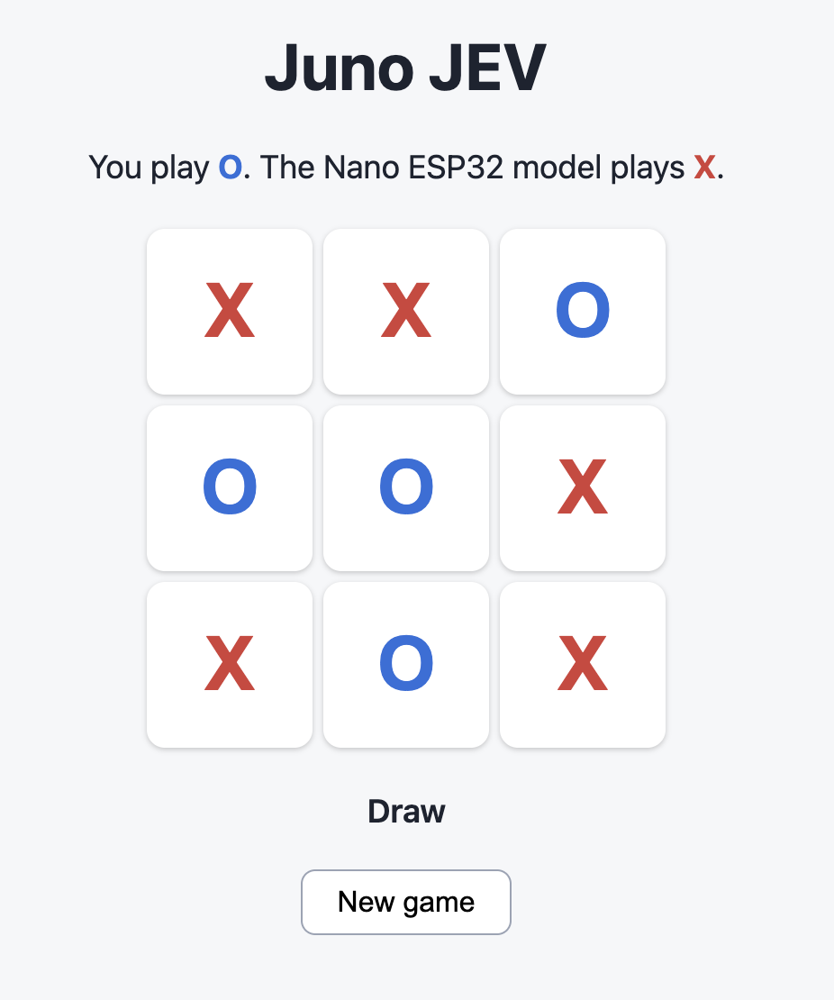
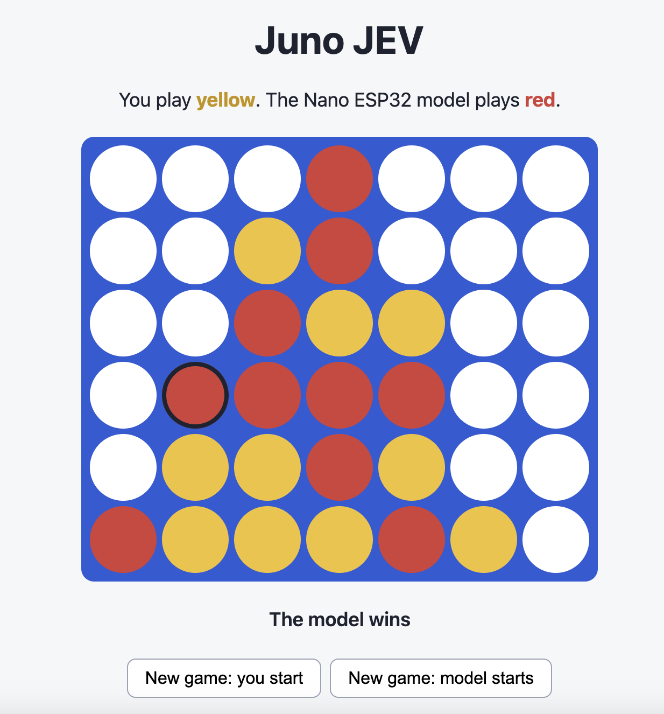

JEV: decision models that run on the board
A language model answers questions; a decision model chooses. Given the state of a game or a machine and the actions that are allowed right now, a JEV model returns the one it scores highest. Juno builds these models on the build machine in pure Java, stores each one in a single JEV1 file, and evaluates it on the board without allocating. This article explains the format, how the board uses it, and the first two models: a tic-tac-toe player that never loses, and a trained Connect Four player.
| Field | Value |
|---|---|
| Sources | juno-dm (format, trainer, reference inference), juno-models (datasets, oracles, tracked .JEV files), api/ai (examples) |
| Boards supported | Nano ESP32, AI Thinker ESP32-CAM and Portenta H7; linked JEV models run from flash |
| Features used | MCU.getDecisionModel(), flash tables, Secret Store, Wi-Fi, JDK HttpServer |
What a JEV model computes
JEV stands for Juno EValuation. A model has a fixed number of actions (the moves it can choose between) and a fixed number of features (the numbers that describe a state). Every action owns one row of weights and a bias, and its score for a state is a dot product:
score(action) = bias[action] + Σ weight[action][feature] × state[feature]
The caller passes the state and the list of actions that are legal in it; the model scores only those and returns the best one, keeping the first on a tie. An illegal action can never be chosen, because it is never scored. That is the whole engine: no layers, no activation functions, no sampling. What makes a model good is entirely in its features and its weights, and both are decided on the build machine.
The JEV1 file
A JEV1 file is big-endian and has no padding:
| Bytes | Content |
|---|---|
| 4 | The magic JEV1 |
| 1 | Version, 1 |
| 2 | Action count |
| 2 | Feature count |
| per action | a 32-bit float scale, a 32-bit float bias, then one signed byte per feature |
A weight is byte × scale, with one scale per action: QuantizedJevModel.from(model) picks the scale so that the
row's largest weight becomes ±127. The size is therefore exact and predictable, 9 + actions × (8 + features) bytes,
and both the compiler and the board check it before using a file.
On the board
DecisionModel in juno-api mirrors LanguageModel. Take it once at startup with MCU.getDecisionModel() and call
begin():
DecisionModel model = MCU.getDecisionModel();
ModelStatus status = model.begin(); // the model -Djuno.dm.model linked into flash
int move = model.evaluate(STATE, LEGAL_ACTIONS);
begin()uses the JEV1 file that the build names with-Djuno.dm.model. The compiler reads it, checks its header and length, and emits it as aconsttable, so it lives in flash and onejuno:flashuploads the program and its model together. A program that callsbegin()without the option fails to build, on the laptop rather than on the board.begin(card, path)is an optional SD-card variant for boards and carriers that provide a card. The web examples use the linked model and the Secret Store only, so they do not require SD-card support.evaluate(state, legalActions)reads both caller-ownedint[]buffers in place and allocates nothing, so it can run in a main loop. It returns-1when no model is loaded, the state has the wrong length, or none of the legal actions belongs to the model.
The evaluator itself is one small C function, the same for every model: for each legal action it reads that action's
row where it lies (flash or PSRAM), adds weight × scale × state[feature] for every non-zero feature, and keeps the
best. Skipping zero features matters: the tic-tac-toe model below has 4,520 features, and exactly one of them is
non-zero for any position.
The first model: tic-tac-toe
juno-models holds the datasets and oracles that turn a problem into a JEV1 file. The tic-tac-toe model is built in
three steps, all deterministic:
TicTacToeDataset.exhaustive()walks the game tree from the empty board and keeps every reachable position that is not finished: 4,520 of them.TicTacToeOraclesolves the game with memoized minimax, scoring each move from the side to move:1wins,0draws,-1loses with best play.TicTacToeModelFactorymakes one feature per position (a one-hot encoding) and one action per cell. The weight of action c on feature p is the oracle's value of playing c in position p.
Because exactly one feature is set, a move's score is simply its minimax value, and choosing the highest-scoring legal
move is playing perfectly. Every weight is -1, 0 or 1, so quantization is lossless: each row's scale is 1/127
and its bytes are -127, 0 or 127. The file, TIC_TAC_TOE.JEV, is 9 actions × 4,520 features, which is
9 + 9 × (8 + 4,520) = 40,761 bytes.
This is a lookup table dressed as a model, and that is deliberate: it is small enough to verify completely, so it
tests the format, the quantization and the board evaluator rather than a learning algorithm. TicTacToeOptimalityTest
in juno-dm and TicTacToeModelTest in juno-models check every one of the 4,520 positions against the oracle, for
the float model and the quantized one, and the tracked TIC_TAC_TOE.JEV must match the factory's output byte for
byte.
The price of a one-hot model is that the program must know which feature a position is. TicTacToeWebGame keeps a
table in flash that maps each position, written as a base-3 number, to its feature index, sorted so a binary search
finds it. A computer move then takes about 80 ms on a Nano ESP32.
Try it: TicTacToeWebGame
TicTacToeWebGame joins Wi-Fi with the credentials in the board's Secret Store and serves a game page; you play O,
the model plays X:

./mvnw -f juno-examples/pom.xml juno:secret -Djuno.board=arduino-nano-esp32 -Djuno.port=<port> -Djuno.secret.key=wifi.ssid
./mvnw -f juno-examples/pom.xml juno:secret -Djuno.board=arduino-nano-esp32 -Djuno.port=<port> -Djuno.secret.key=wifi.password
./mvnw -f juno-examples/pom.xml compile juno:flash \
-Djuno.main=io.github.jabrena.juno.api.ai.TicTacToeWebGame \
-Djuno.board=arduino-nano-esp32 -Djuno.port=<port> \
-Djuno.dm.model=../juno-ai/juno-models/src/main/resources/dm/TIC_TAC_TOE.JEV
./mvnw -f juno-examples/pom.xml juno:monitor -Djuno.board=arduino-nano-esp32 -Djuno.port=<port>
The monitor prints the board's address; open it in a browser on the same network. The page calls three routes,
GET /api/state, POST /api/move and POST /api/reset, and the board answers each from a buffer it allocated once at
startup. TicTacToeDecisionModel is the minimal version with no network: it loads the model and prints its opening
move on the serial port every five seconds.
The same web example is supported on the AI Thinker ESP32-CAM and Portenta H7. Provision wifi.ssid and
wifi.password with juno:secret on the selected board. The Portenta stores the credentials in its SE050 Secret Store;
it does not use an SD card for Wi-Fi or for these linked JEV models.
Training instead of solving: Connect Four
Not every problem fits in a table. Connect Four has about 4.5 trillion positions, so CONNECT_FOUR.JEV is trained
instead. It is 457 bytes: 7 actions, one per column, and 56 features, a block of 8 per column that describes what
dropping a disc there would do for the player to move:
| Feature | Meaning | Learned weight |
|---|---|---|
WIN |
the move wins | 127 |
LOSES |
after the move the opponent can win at once, on the cell above or on a threat left open | −122 |
DENIED |
lines through the cell that held two or more opponent discs and none of ours | 9 |
CENTRE |
3 minus the distance from the centre column | 9 |
THREES |
lines the move leaves with three own discs and one empty cell | 8 |
TWOS |
lines the move leaves with two own discs and two empty cells | 4 |
SPOIL |
the move makes our own winning cell above it playable, so the opponent blocks it | −7 |
BLOCK |
the opponent would have won on that cell | −6 |
BLOCK ends up slightly negative, most likely because LOSES already does its job: not blocking a threat is a move
after which the opponent wins.
The weights are learned in three deterministic steps:
ConnectFourDatasetplays 400 seeded games, collecting 6,047 distinct positions. Each move is the oracle's, except a random column a quarter of the time, so the games also reach the positions an imperfect opponent creates.ConnectFourOracle, a depth-6 negamax search with alpha-beta pruning and an open-line heuristic, labels every position with its preferred column. It does not solve the game: that needs a far deeper search than a training run can afford for every position.SharedWeightJevTrainerinjuno-dm, an averaged perceptron, learns one set of 8 weights that every column shares, because a winning or blocking move means the same in every column. The result is still an ordinary JEV model: each action's row holds the shared weights on its own block and zeros elsewhere.
Sharing the weights is what makes it work. JevTrainer, a plain perceptron with an independent row per column,
agreed with the oracle on only 33% of new positions, took 42 of 118 available wins and won 19 of 200 games against the
depth-4 search below; with shared weights the model takes every win. The held-out positions below come from 100
seeded games the model never trained on, the ones ConnectFourModelTest checks; every match starts from two random
moves so the games differ:
| Measure | Result |
|---|---|
| Agrees with the oracle on unseen positions | 61.4% |
| Takes an immediate win when one exists | 118 of 118 |
| Lets the opponent win at once when another move avoids it | 0 of 1,498 positions |
| Against a random player, 100 games with each colour | 199 wins, 1 loss |
| Against a depth-4 search that plays a random move one time in ten, 200 games | 90 wins, 17 draws, 93 losses |
That is the trade a JEV model makes: its features look one reply ahead, and it plays about as well as a four-move search for the cost of 7 × 56 multiply-adds; a better player needs better features rather than a bigger engine.
Try it: ConnectFourWebGame
On the board, ConnectFourGame keeps the 42 cells in an int[] and computes the same 56 features, from buffers
allocated once; ConnectFourGameTest replays 300 random games and checks every position's features against
ConnectFourFeatures, so the board feeds the model exactly what it was trained on. ConnectFourWebGame serves the
game with the same Secret Store Wi-Fi as the tic-tac-toe example:

./mvnw -f juno-examples/pom.xml compile juno:flash \
-Djuno.main=io.github.jabrena.juno.api.ai.ConnectFourWebGame \
-Djuno.board=arduino-nano-esp32 -Djuno.port=<port> \
-Djuno.dm.model=../juno-ai/juno-models/src/main/resources/dm/CONNECT_FOUR.JEV
./mvnw -f juno-examples/pom.xml juno:monitor -Djuno.board=arduino-nano-esp32 -Djuno.port=<port> -Djuno.baudRate=115200
You play yellow and the model plays red; two buttons start a new game with either side moving first. The routes are
the tic-tac-toe ones: GET /api/state returns the 42 cells column by column from the bottom, the status and the last
cell played, POST /api/move takes a column, and POST /api/reset takes h or m for who starts:
curl -X POST --data m http://<address>/api/reset
# {"board":"------------------M-----------------------","status":"turn","last":18}
On a Nano ESP32 a move, the feature encoding, the model's evaluation and the HTTP round trip over Wi-Fi together take about 60 ms.
What to expect
A JEV model is as good as the features it is given: the evaluator is linear and looks one decision ahead, so it does
not search. In exchange it is tiny, its cost is known in advance (one pass over the legal actions' rows), and it never
allocates, which is what a microcontroller can afford inside a control loop. Build a new model on the laptop, pass the
file to -Djuno.dm.model and flash again, or copy it to an SD card and load it with begin(card, path).